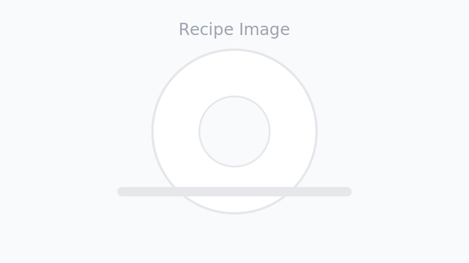

All Recipes

Spaghetti Aglio e Olio
Garlic, olive oil, chili, and perfectly al dente pasta in 15 minutes.
Chicken Teriyaki
Juicy pan-seared chicken glazed with a shiny sweet-savory sauce.
Avocado Toast
Creamy avocado on crunchy sourdough with lemon and chili flakes.
Beef Stir Fry
Colorful veggies and tender beef tossed in a garlicky sauce.
Chocolate Chip Cookies
Chewy centers, crispy edges, and melty puddles of chocolate.
Garlic Butter Shrimp
Juicy shrimp tossed in garlicky butter and lemon in 12 minutes.
Caprese Salad
Tomato, mozzarella, and basil with olive oil and balsamic.
Pesto Pasta
Al dente pasta tossed in basil pesto and parmesan.
Fried Rice
Day-old rice stir-fried hot with veggies, egg, and soy.
Tofu Stir Fry
Crispy tofu and vibrant veggies in a glossy sauce.
Tomato Basil Soup
Velvety, bright, and comforting classic tomato soup.
Fluffy Pancakes
Stack of soft pancakes perfect for lazy mornings.
Fudgy Brownies
Crackly tops and gooey centers every time.